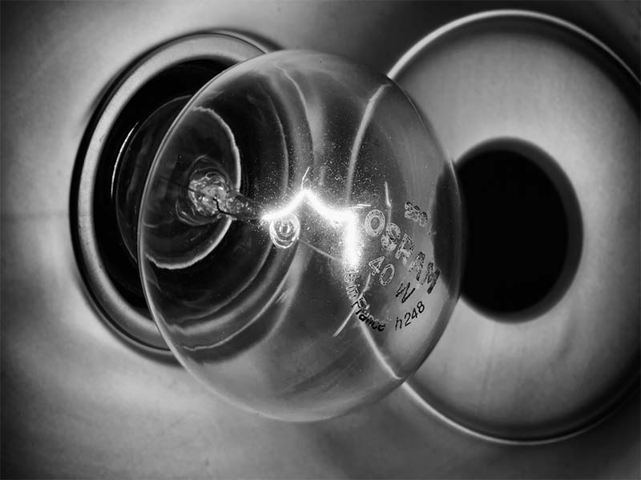

Hacia el año 600 antes de Cristo (a.C.), el filósofo griego Tales de Mileto descubrió que una barra de ámbar frotada con un paño atraía objetos pequeños, como trocitos de papel. Llamó electricidad a la propiedad adquirida por la barra, porque ámbar en griego se dice elektron .
El fenómeno se observa también en muchos otros materiales, como plástico o vidrio, y modernamente se llama carga eléctrica a la propiedad que adquieren al frotarlos. La corriente eléctrica que utilizamos diariamente consta de cargas eléctricas en movimiento, que se producen en formas más eficientes que frotando cuerpos.
La carga eléctrica es una magnitud física característica de los fenómenos eléctricos. La carga eléctrica es una propiedad de los cuerpos. Cualquier trozo de materia puede adquirir carga eléctrica.
La electricidad estática es una carga eléctrica que se mantiene en estado estacionario (en reposo) sobre un objeto, causada por la pérdida o ganancia de electrones.
Todo cuerpo se compone de átomos, cada uno de los cuales posee igual número de electrones y protones.
Los electrones poseen una carga negativa , y los protones una carga positiva . Estas cargas se contrarrestan unas a otras, para que el objeto resulte neutro (no cargado).
Pero al frotar, por ejemplo, un peine o peineta sobre un chaleco los electrones saltan del chaleco al peine y éste se carga de electricidad estática.
El peine pasa a tener más electrones que protones y se carga negativamente , mientras que el chaleco con más protones que electrones , se carga positivamente .
Por lo tanto, se pueden definir dos tipos de cargas eléctricas:
1.- Carga positiva: Corresponde a la carga del protón.
2.- Carga negativa: Corresponde a la carga del electrón.
Las cargas eléctricas no se crean al frotar un cuerpo, sino que se trasladan.
Las cargas del mismo signo se repelen y las cargas de signo contrario se atraen.
electriocidad001 Igual signo: se repelen Distinto signo: se atraen En todos los fenómenos eléctricos que se originan en el interior de un sistema aislado, vale la ley de conservación de cargas , según la cual la suma de las cargas eléctricas positivas menos la de las cargas negativas se mantiene constante .
La unidad con que se mide la carga eléctrica es el coulomb (C), en honor a Charles Coulomb , y que corresponde a lo siguiente:
1 Coulomb = 6,25x10 18 electrones. Por lo que la carga del electrón es de 1,6x10 -19 C .
Para lograr que un cuerpo quede cargado eléctricamente requerimos que haya en él un exceso de uno de los dos tipos de carga (+ o – ), lo cual podemos lograr haciendo uso de diferentes procesos, como el frotamiento (ya visto en el ejemplo del peine), el contacto y la inducción .
{kind=link}